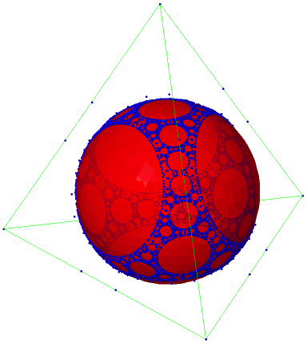

Coxeter Groups meet Convex Geometry
(Minicourses
/ Workshop)
Information

Coxeter Groups meet Convex Geometry(Mini-courses and Workshop)LaCIM (Laboratoire de Combinatoire et Informatique Mathématique)UQÀM (Université du Québec à Montréal)Montréal, QuébecAugust 13-17 and 20-22, 2012
Contact: Organization:
There are numerous examples of relations between convex geometry and Coxeter groups, the most known probably being the construction of the Tits cone. During these last years, many interesting other examples have been thoroughly studied, among them:

- generalized associahedra and permutahedra of finite reflection groups;
- Cambrian fans;
- brick polytopes and multi-associahedra;
- imaginary cones and infinite root systems.
These nice encounters between Coxeter groups and convex geometry have two main consequences:
- we manage to better understand the combinatorics and geometry of Coxeter groups by encoding some of their characteristics in polytopal or more general convex constructions;
- we also obtain new families of interesting polytopes, which is very useful in convex geometry since such families are fairly rare.
The aim of this meeting is to bring together experts and interested people of both communities, in order to learn from each other and to discuss together new avenues that can be explored. The timeline is the following:
- August 13-17: series of mini-courses (see the outlines and some slides and lecture notes in the section Lectures below):
- Geometry of Coxeter groups and root systems [Christophe Hohlweg]
- Introduction to polytopes, Cambrian lattices and Cambrian fans, generalized permutahedra [Carsten Lange]
- Brick polytopes and generalized associahedra [Vincent Pilaud]
- Bruhat intervals and polyhedral cones [Matthew Dyer]
- August 20-22: discussions and collaborations.
The registration is now closed. For any information, please contact coxeter-conv@lacim.ca.
Program
Reception: Monday 13th, from 8h30 to 9h, in the LaCIM central room PK-4214 (4th floor of President-Kennedy building, see section Location).
Minicourses: The lectures will take place in room PK-5115 (5th floor).
(*) During the second slot of the afternoon (15h30-17h... or more), the lecturers will be available to answer questions, or talk about the exercises. This is also a time devoted for blackboard discussions between the participants (we provide coffee and you'll make the theorems!).
You can download the pdf version with a more detailed schedule.
9h-10h30 11h-12h30 14h-15h30 15h30-17h M 13 Coxeter I [Hohlweg] Coxeter I [Hohlweg] Polytopes I [Lange] Polytopes I [Lange] T 14 Polytopes II [Lange] Brick I [Pilaud] Brick I [Pilaud] Discussions* W 15 Polytopes III [Lange] Brick II [Pilaud] Brick II [Pilaud] Discussions* T 16 Coxeter II [Hohlweg] Bruhat I [Dyer] Bruhat I [Dyer] Discussions* F 17 Bruhat II [Dyer] Bruhat II [Dyer] Free afternoon Free afternoon The description of the lectures can be found in the section Lectures below.
Workshop: The problems stated during the lectures of the first week, as well as problems that may be proposed by the participants, will be the basis for the discussions of the workshop days.
You can now consult the tentative schedule of the workshop.
Lectures
The first week will consist in several mini-courses that build on each other:
- Geometry of Coxeter groups and root systems [Christophe Hohlweg]
(The slides of the lectures are now available.)
- Finite reflection groups and permutahedra. In this first lecture we will put the emphasis on a presentation of finite Coxeter groups by the mean of a family of convex polytopes named permutahedra. Then we will give a construction of a second class of convex polytopes, generalized associahedra, that is intimately linked to permutahedra.
- On the geometry of infinite root systems. The aim of this second lecture is to present some open problems that arise when trying to generalize some combinatorial and geometrical properties seen in the first lecture to infinite Coxeter groups.
Selected Bibliography:
[1] M. Dyer, On the Weak Order of Coxeter groups, arXiv:1108.5557.
[2] C. Hohlweg, Permutahedra and Associahedra: Generalized associahedra from the geometry of finite reflection groups in « Associahedra, Tamari Lattices and Related Structures », Tamari Memorial Festschrift, editors F. Mueller-Hoissen, J. Pallo and J. Stasheff, Progress in Mathematics, vol. 299, (Birkhauser, 2012), arXiv:1112.3255.
[3] C. Hohlweg, J. P. Labbé and V. Ripoll, Asymptotic behaviour of roots of infinite Coxeter groups I, arXiv:1112.5415.
[4] J. E. Humphreys, Reflection groups and Coxeter groups, Cambridge University Press.- Introduction to polytopes, Cambrian lattices and Cambrian fans, generalized permutahedra [Carsten Lange]
- Introduction to the theory of polytopes. The first lecture is a basic introduction to polyhedral geometry and polytopes. Our goal is to clarify different notions of equality for polytopes and explain possible relations between distinct families of equal polytopes.
- Cambrian theory and associahedra. We use associahedra in the second lecture as a fundamental example to show how certain phenomena that occur in the combinatorics of Coxeter groups can be described geometrically.
- Generalized permutahedra. The third lecture puts these phenomena into the unifying geometric picture of generalized permutahedra and discusses some aspects of generalized permutahedra.
Selected Bibliography:
[1] C. Ceballos, F. Santos, G. M. Ziegler, Many non-equivalent realizations of the associahedron, arXiv:1109.5544.
[2] C. Hohlweg, C. Lange, H. Thomas, Permutahedra and generalized associahedra, Adv. Math. 226 (2011), 608-640.
[3] J. Morton, L. Pachter, A. Shiu, B. Sturmfels, O. Wienand, Convex rank tests and semigraphoids, SIAM J. Discrete Math. 23 (2009), 1117--1134.
[4] N. Reading, D. Speyer, Cambrian fans, J. Europ. Math. Soc. (JEMS) 11 (2009), 407-447.
[5] A. Postnikov, Permutahedra, associahedra and beyond, Int. Math. Res. Not. (2009), 1026-1106.
[6] A. Postnikov, V. Reiner, L. Williams, Faces of generalized permutahedra, Documenta Math. 13 (2008) 207-273.- Brick polytopes and generalized associahedra [Vincent Pilaud]
(The slides of the lectures are now available.)
We will present the construction of the brick polytope of a subword complex, which was developed in type A in [PS2] and in general finite types in [PS1]. The first lecture will be devoted to the combinatorics of subword complexes and to the definition of the brick polytope, while the second one will cover the geometric properties of the brick polytope and its application to generalized associahedra. We will essentially follow the presentation of [PS1].
Selected Bibliography:
[PS1] V. Pilaud and C. Stump. Brick polytopes of spherical subword complexes: a new approach to generalized associahedra (arXiv:1111.3349).
[PS2] V. Pilaud and F. Santos. The brick polytope of a sorting network. European J. Combin. 2012.
[KM] A. Knutson and E. Miller. Subword complexes in Coxeter groups. Adv. Math. 2004.
[PP] V. Pilaud and M. Pocchiola. Multitriangulations, pseudotriangulations and primitive sorting networks. Discrete and Comput. Geom. 2012.
[CLS] C. Ceballos, J.-P. Labbé and C. Stump. Subword complexes, cluster complexes, and generalized multi-associahedra (arXiv:1108.1776).
[P] V. Pilaud. The greedy flip tree of a subword complex (arXiv:1203.2323).- Bruhat intervals and polyhedral cones [Matthew Dyer]
(The lecture notes are now available.)
- Bruhat order and the root labelled Bruhat graph. We shall describe Bruhat order on a Coxeter group and attach to it a directed graph with edges labelled by roots. We see that Bruhat intervals are face posets of certain regular CW complexes underlying spheres. (See [5])
- Vector labelled face lattice of a polyhedral cone. Motivated by 1), we attach to a polyhedral cone in a Euclidean space the Hasse diagram of its face lattice with edges of the Hasse diagram labelled by suitable vectors ([5]). The face lattice is again the face poset of a regular CW complex of a sphere.
- Deodhar's conjecture and the nil Hecke ring. We discuss Deodhar's conjecture, which may be viewed as the analogue for Bruhat order of the trivial fact that a d-dimensional convex polytope has at least (d+1) vertices. The proof (see [6]) involves rational functions from Kostant and Kumar's nil Hecke ring, which arises in the study of T-equivariant cohomology of flag varieties of Kac-Moody groups.
- Volume formula for polyhedral cones. We indicate the analogous arguments to those in 3) in the context 2) instead of 1), which turn out to involve rational functions describing volume formulae for frustums of cones.
- Conjecture on Bruhat intervals and polyhedral cones. Partly motivated by 3)-4) (and more fully by [7]) we present a part of some conjectures which suggest there is a natural common generalization of the structures considered in 1) and 2).
Background knowledge: The following will be discussed in lectures, but some prior familiarity would be helpful:
- Coxeter groups, Bruhat order: Ch 5 of [1], Ch 2 of [2].
- Polyhedral cones, polytopes, homogenization: Lectures 0-2 of [3].
- Posets, regular CW complexes, shellability: Appendix 4.7 of [4].
Selected Bibliography:
[1] Humphreys, James E., Reflection groups and Coxeter groups, Cambridge Studies in Advanced Mathematics 29, Cambridge University Press, Cambridge, 1990.
[2] Björner, Anders and Brenti, Francesco, Combinatorics of Coxeter groups, Graduate Texts in Mathematics 231, Springer, New York, 2005.
[3] Ziegler, Günter M., Lectures on polytopes, Graduate Texts in Mathematics 152, Springer-Verlag, New York,1995.
[4] Björner, Anders and Las Vergnas, Michel and Sturmfels, Bernd and White, Neil and Ziegler, Günter M., Oriented matroids, Encyclopedia of Mathematics and its Applications 46, Cambridge University Press, Cambridge, 1999.
[5] Dyer, M. J., Bruhat intervals, polyhedral cones and Kazhdan-Lusztig-Stanley polynomials, Math. Z. 215 (1994), 223-236.
[6] Dyer, M. J., The nil Hecke ring and Deodhar's conjecture on Bruhat intervals, Invent. Math. 111, (1993), 571--574.
[7] Dyer, M. J., Representation theories from Coxeter groups, in Representations of groups (Banff, AB, 1994), CMS Conf. Proc. 16, 105--139, Amer. Math. Soc., Providence, RI, 1995.
Participants
Natalie Aisbett University of Sydney François Bergeron UQÀM Maxime Bergeron McGill University Pierre Cagne ENS Paris Michael Carr Brandeis University Alex Csar University of Minnesota Kevin Dilks University of Minnesota Jonathan Durand Burcombe UQÀM Matthew Dyer University of Notre Dame Timothy Ferdinands University of Notre Dame Stefan Forcey University of Akron Xiang Fu University of Sydney John Harnad Concordia University Christophe Hohlweg UQÀM Jean-Philippe Labbé Freie Universität Berlin Sébastien Labbé UQÀM Nadia Lafrenière UQÀM Carsten Lange Freie Universität Berlin Thomas McConville University of Minnesota John McKay Concordia University Alexander Miller University of Minnesota Alejandro Morales UQÀM Vincent Pilaud École Polytechnique Alex Postnikov MIT Jean-Philippe Préaux Université d'Aix-Marseille Vic Reiner University of Minnesota Vivien Ripoll UQÀM Franco Saliola UQÀM Jihye Seo McGill University Alina Stancu Concordia University Salvatore Stella Northeasten University Yannic Vargas UQÀM
Location
The minicourses and the workshop will take place in the President-Kennedy building on the UQÀM campus. The entrance is located at 201, President-Kennedy Street (it is also one of the entrances of the metro station Place des Arts).
- Reception (8h30-9h on Monday 13th): central room of LaCIM PK-4214 (4th floor)
- Minicourses: room PK-5115 (5th floor)
- Workshop: rooms PK-5115 and PK-4323
Click to view larger map
Hotels
The following hotels are within walking distance to the conference venue, and have an agreement with UQÀM to offer special rates. When you make your booking, ask for the corporate rate for UQÀM.
N.B.: prices are indicated per night, in Canadian dollars, without taxes.
- Armor Manoir Sherbrooke: 99$ for a superior room: queen size bed or two single beds (twin), private bathroom, includes breakfast.
- L'Appartement Hôtel: Single occupancy: studio apartment (queen size bed + kitchenette): 127$ (115$ if you stay 7 nights or more). Double occupancy: suite (one bedroom with queen size bed + living-room with sofa bed + kitchenette): $133 (150$ if you stay 7 nights or more). Includes breakfast.
- Trylon Apartments Hotel: studio : 62$, junior suite : 67$, 2 bedrooms apartment : 78$. (mention the name of the conference and of the organizers in your booking)
- Delta Montréal: $138 for single occupancy.
Important: for the participants who have financial support from the LaCIM, we remind you to keep all your receipts (invoice of plane tickets, boarding passes, hotel bill, gas bill, restaurant receipts); this will make much easier the process of reimbursement.
Travel
Plane: Montreal is served by the Pierre Elliott Trudeau Airport (YUL). From the airport, a taxi to the downtown core costs about $35-$45. More economically, you can take the Airport Express bus #747, which operates 24 hours per day and costs $8 (exact fare necessary coins only!). The ticket provides also with a transit pass valid during 24h for all the STM network.
The closest stop to UQAM is stop number 8 (René Lévesque and Jeanne-Mance).Bus: Buses arrive and depart from the Station Centrale d'autobus, which is a short walk to/from UQAM. Intercity bus service is offered by Megabus, Coach Canada, Adirondack Trailways, Greyhound. Train: Trains arrive and depart from the Gare Centrale, which is a short walk to/from UQAM. Train service is provided by Via Rail Canada and Amtrak. Other: More information can be found on the WikiTravel website for Montreal.
Other information
Thursday dinner: We reserved in the restaurant Le Nil Bleu (ethiopian food) on Thursday 16th at 6:30pm (3706 rue St-Denis, corner Avenue des Pins). Please let us know by Tuesday noon about your presence and the number of accompanying people.
Information document: Here is a pdf document with general information on the conference and on Montreal, in particular a map of the restaurants near LaCIM (will be distributed on Monday).
Photos: the group photos can be found on that page.
Funding: We are grateful for the financial support from the LaCIM.